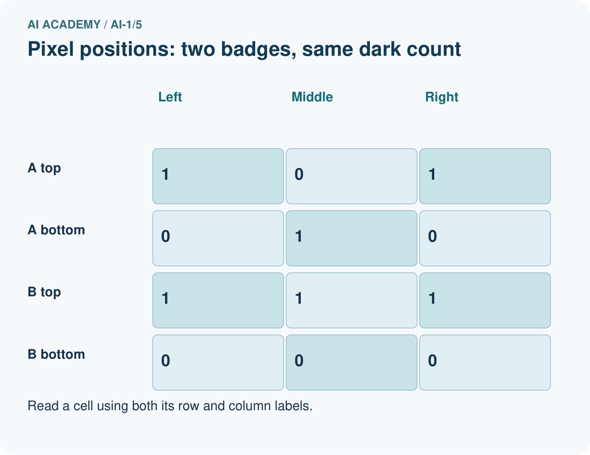
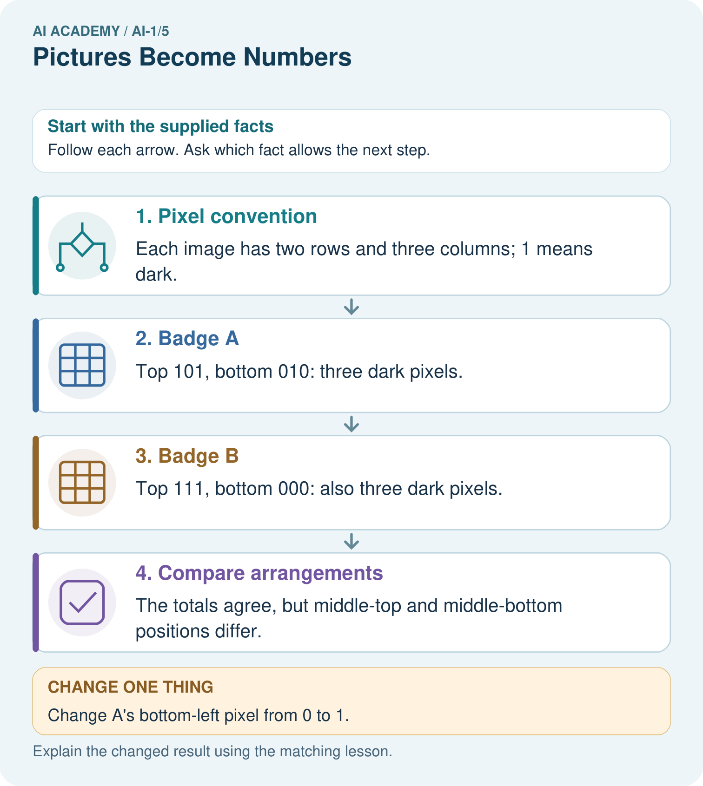
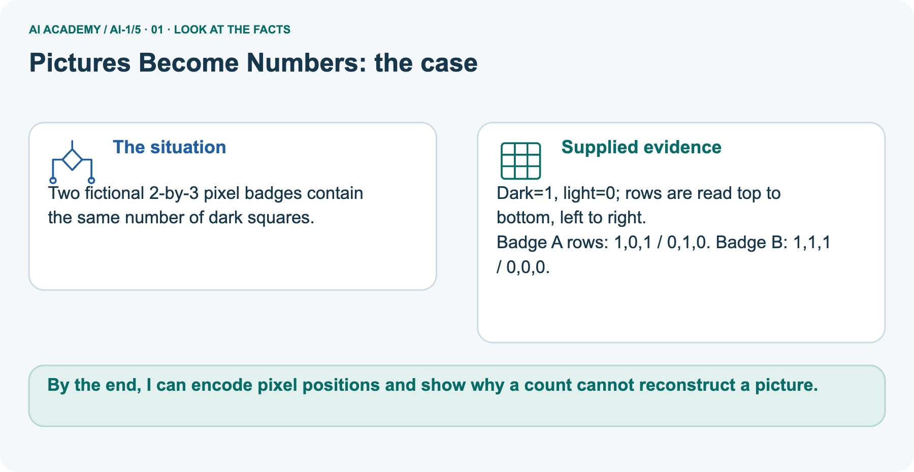
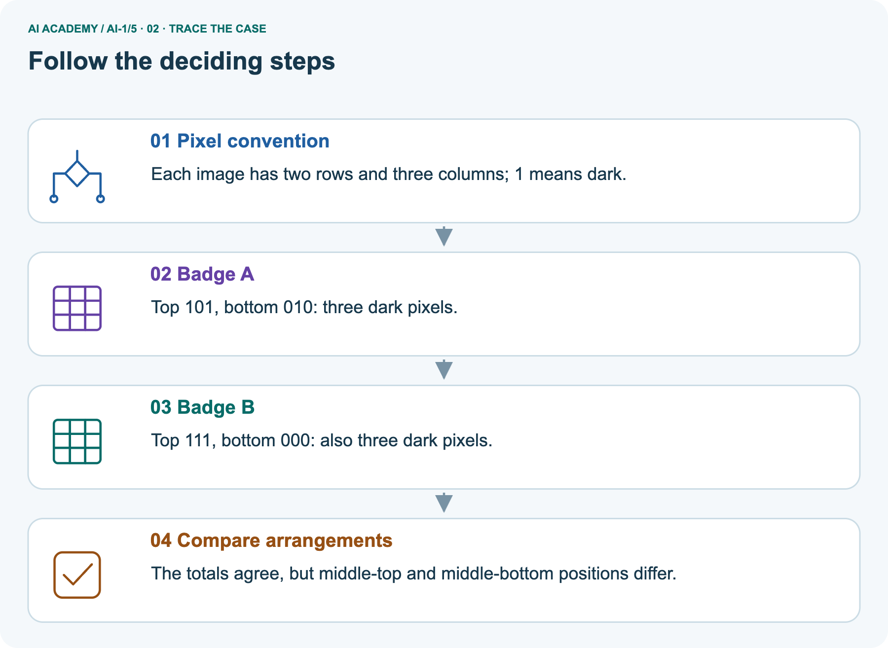
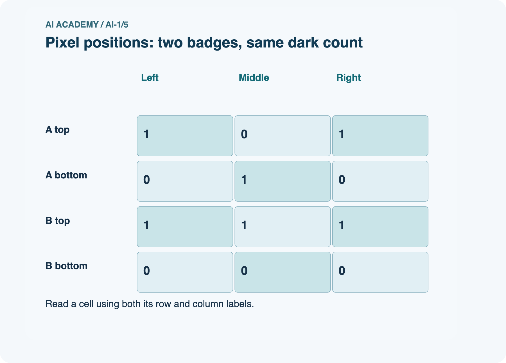
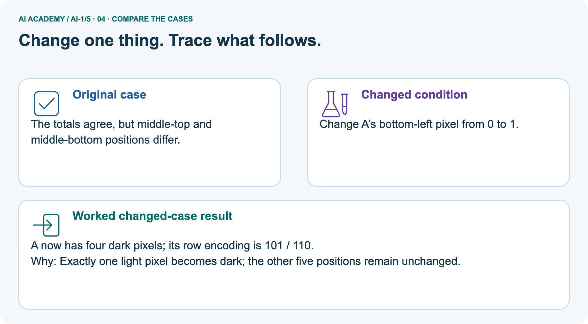
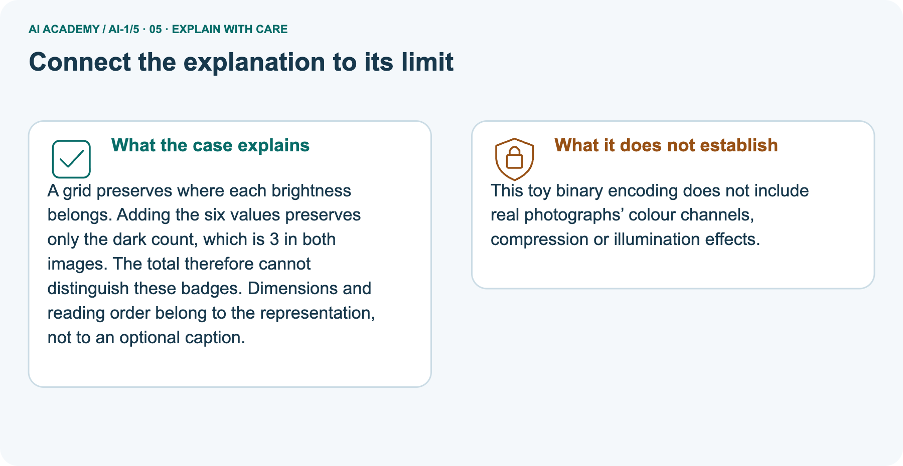
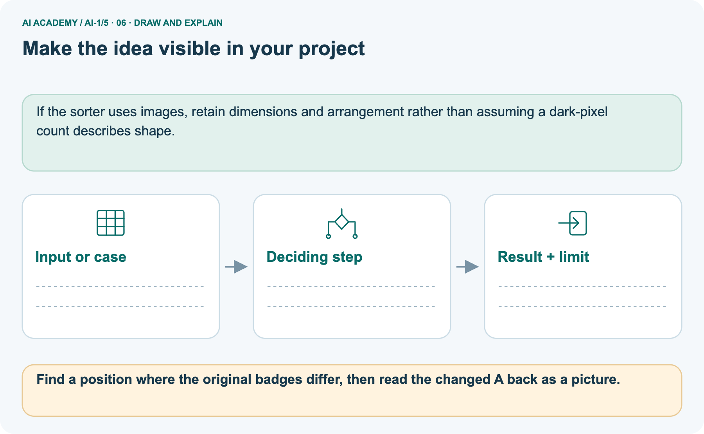

AI Academy · Level 1 · Grade 6 · Week 5 · Workbook
Pictures Become Numbers
Learn to understand, design, build, test and explain AI systems responsibly.
Project: Helpful Classroom Sorter
Workbook · 1 of 21
Recall and choose your starting point
Record your starting explanation for Pictures Become Numbers before opening notes. Show any later correction separately.
Try the recall before opening notes. Then use a different colour or a labelled second line to correct your explanation.
Rules or Learned Patterns?
Without opening the old lesson, explain one key idea from Rules or Learned Patterns?. Give an example and a mistake that the idea helps you avoid.
Input, Process, Output
Without opening the old lesson, explain one key idea from Input, Process, Output. Give an example and a mistake that the idea helps you avoid.
Workbook · 2 of 21
Practise with fading help
Complete the supported Pictures Become Numbers trace and record the first step you can explain without help.
Use W2: Preserve the missing field for Images as numerical grids. Record the answer once; the lesson and workbook refer to the same attempt.
| Given inputs | Procedure I chose | Middle steps | Result and check |
|---|---|---|---|
Workbook · 3 of 21
Individual reasoning check
Check the proposed Pictures Become Numbers explanation against the supplied facts before discussing it.
Use the worked case for Images as numerical grids. Proposed explanation: “The number one always means black”. Decide whether this explanation is supported.
Point to the step or supplied fact that decides; explain your repair if needed.
Workbook · 4 of 21
Independent transfer case
Write one first attempt at the reserved independent case before feedback. Repeated copies of that case refer to the same recorded attempt.
Independent case: Design a new counterexample
Create two different images of width 4 and height 2, each with exactly three black pixels. Write both complete row encodings. Explain which fact their shared count retains and which difference it discards.
Attempt this case before feedback. Record any help. Earlier examples below are further practice; a case already practised with feedback cannot establish fresh transfer.
Workbook · 5 of 21
Your learning target
Connect the Pictures Become Numbers target to a trace and a justified conclusion.
Encode a 2×3 monochrome image with top row black–white–black and bottom row white–black–white, using 1 for black. A partner reads columns first. Explain why the image changes although the six values are identical.
Workbook · 6 of 21
Solve the given case
Solve the supplied Pictures Become Numbers case and show the deciding evidence.
A 2 by 2 image has rows [0,1] and [1,0]. Zero means white and one means black.
Draw it, then change the top-left value to 1.
Show your trace, calculation or evidence
Workbook · 7 of 21
Check a changed case
Apply the procedure to the changed case and record why the conclusion follows.
Use 0 for dark and 1 for light. Draw a two-by-two image with rows [1,0] and [0,1]. Then change only the bottom-left pixel to light. Which number changes?
My independent answer and reason
Week 5 Test and reflect
Workbook · 8 of 21
Design a revealing test
Specify a changed input, expected result and observation separately.
Create a changed input, boundary case or missing-information case. Write the expected answer or safe response before testing.
| Test record | My evidence |
|---|---|
| Changed input or condition | |
| Expected answer or fallback | |
| Observed result | |
| Why the result occurred |
Workbook · 9 of 21
Project checkpoint
Justify what Pictures Become Numbers adds to Helpful Classroom Sorter and keep the evidence.
Choose which visible item features the Classroom Sorter may represent as image measurements and name one feature that lighting could distort.
The project change and evidence I will keep
Workbook · 10 of 21
Self check
Judge explanation, evidence, transfer and limits separately; attach the work behind your judgement.
- I can explain the mechanism.
- I can show evidence.
- I can handle a changed case.
- I can name a limit.
Mark each as not yet, with help or independently, and attach supporting work.
Teacher review ____________________ Next step ____________________
Workbook · 11 of 21
Transfer practice from the original programme
Use this earlier case as transfer practice. A case already discussed with feedback is not fresh assessment evidence.
Encode a 2×3 monochrome image with top row black–white–black and bottom row white–black–white, using 1 for black. A partner reads columns first. Explain why the image changes although the six values are identical.
Record support used: none, hint or teacher explanation.
Workbook · 12 of 21
W1 Read and reconstruct
Read and reconstruct. Apply the supplied Pictures Become Numbers facts and keep your reasoning.
Using 1 for black and 0 for white, draw width 3, height 2 with rows 1,0,1 and 0,1,0. Read it back into numbers and count black pixels.
Workbook · 13 of 21
W2 Preserve the missing field
Preserve the missing field. Apply the supplied Pictures Become Numbers facts and keep your reasoning.
A message contains 1,0,0,1,1,0 but gives no dimensions. Show a one-row arrangement and a two-row arrangement using the same values. Name the extra information that would distinguish them.
Workbook · 14 of 21
W3 Test a count feature
Test a count feature. Apply the supplied Pictures Become Numbers facts and keep your reasoning.
A classifier receives only the number of black pixels. Can it always distinguish the chapter's cross from every other three by three pattern? Construct a different pattern with the same count and explain.
Workbook · 15 of 21
W4 Design a new counterexample
Attempt before feedback. If this repeats the selected independent case, reuse that first attempt; otherwise keep a separate record. Design a new counterexample. Apply the supplied Pictures Become Numbers facts and keep your reasoning.
Create two different images of width 4 and height 2, each with exactly three black pixels. Write both complete row encodings. Explain which fact their shared count retains and which difference it discards.
Workbook · 16 of 21
W5 Locate an input problem
Locate an input problem. Apply the supplied Pictures Become Numbers facts and keep your reasoning.
A program receives the correct grid but displays black wherever the code says 0 and white wherever it says 1. A student proposes collecting more classifier examples.
Identify the earlier mismatch and the first check to perform.
Workbook · 17 of 21
Feedback, return check and learning record
Record the first repaired step and a different case to revisit after a delay.
| Evidence | My record |
|---|---|
| Worked alone / hint / model | |
| First step I repaired and why | |
| New case checked later; date and result | |
| What I can now explain without notes | |
| One remaining question |
Revisit this idea with your teacher after a delay. Familiarity is different from explaining and using it on a changed case.
Workbook · 18 of 21
Pictorial case practice: Pictures Become Numbers
Two fictional 2-by-3 pixel badges contain the same number of dark squares. Explain the labelled step before checking the changed condition.
Two fictional 2-by-3 pixel badges contain the same number of dark squares.
Dark=1, light=0; rows are read top to bottom, left to right.
Badge A rows: 1,0,1 / 0,1,0. Badge B: 1,1,1 / 0,0,0.


Find a position where the original badges differ, then read the changed A back as a picture.
Record the help used
Support used: alone / hint / worked example. This record is practice evidence.
Project connection: If the sorter uses images, retain dimensions and arrangement rather than assuming a dark-pixel count describes shape.
Workbook · 19 of 21
Project portfolio milestone
Keep this week’s input, deciding step, result and limit together in the Helpful Classroom Sorter record.
Project: Helpful Classroom Sorter
Current milestone: Frame the need. Name the user, the problem, allowed inputs and a safe simple starting method.
If the sorter uses images, retain dimensions and arrangement rather than assuming a dark-pixel count describes shape.
| Evidence to keep | My record |
|---|---|
| This week’s input and deciding step | |
| Prediction and actual result (or labelled paper trace) | |
| One change since the previous checkpoint and why | |
| One error or limit and the next test |
Workbook · 20 of 21
Supported practice and learning evidence
Try the supported questions before comparing with hints and feedback. Record what you repaired and the evidence you retained.
Use this supported practice once, in the browser or on paper. Keep the reserved independent assessment for a separate first attempt before teacher feedback.
Two fictional 2-by-3 pixel badges contain the same number of dark squares.
Practice 1: explain the deciding evidence
Which labelled step matches this detail? The totals agree, but middle-top and middle-bottom positions differ.
1. Compare arrangements
2. Badge B
3. Pixel convention
4. Badge A
Hint · try first
Hint if needed: Read the steps in the pictorial case. Match the supplied detail to the stage that performs or records it.
Feedback · compare after trying
After your attempt, compare with the supported explanation: Compare arrangements The totals agree, but middle-top and middle-bottom positions differ. A grid preserves where each brightness belongs.
Adding the six values preserves only the dark count, which is 3 in both images. The total therefore cannot distinguish these badges. Dimensions and reading order belong to the representation, not to an optional caption.
Practice 2: explain the deciding evidence
Changed case · predict first
Changed-case practice: Change A’s bottom-left pixel from 0 to 1. Which conclusion is supported by the supplied facts?
1. A now has four dark pixels; its row encoding is 101 / 110.
2. We can decide the result without examining the changed input or the procedure.
3. This one example guarantees correct results for every future input.
Hint · try first
Hint if needed: Use the changed condition and the deciding step in the pictorial trace. The answer must say what follows from those facts.
Feedback · compare after trying
After your attempt, compare with the supported explanation: A now has four dark pixels; its row encoding is 101 / 110. Exactly one light pixel becomes dark; the other five positions remain unchanged.
Repair a missing building block
Review Rules or Learned Patterns? (ai-1/4). Goal: Execute a stated rule including its boundary. Short practice: Show which stage used labels and which stage used only the new measurement..
Return to this week and explain what you changed.
Review Input, Process, Output (ai-1/2). Goal: Trace information through a system without confusing information with a physical action. Short practice: Use the richer record to find blue pencils in Box B.
Explain why total alone was insufficient.. Return to this week and explain what you changed.
Keep your completed work
Use Download completed work in the hosted lesson to export your answers, reflections, practice feedback and code-run evidence. Open the HTML copy to read or print it.
Drafts stay in this browser when storage is available; clear drafts on a shared device.
Workbook · 21 of 21
Visual concept journey
Explain each Pictures Become Numbers picture from its labels, then record a relevant limit.
01. Pictures Become Numbers: the case

Two fictional 2-by-3 pixel badges contain the same number of dark squares. Supplied facts: Dark=1, light=0; rows are read top to bottom, left to right. Badge A rows: 1,0,1 / 0,1,0. Badge B: 1,1,1 / 0,0,0.
Point to the given fact that matters most. Explain why it matters.
02. Follow the deciding steps

Pixel convention: Each image has two rows and three columns; 1 means dark. → Badge A: Top 101, bottom 010: three dark pixels. → Badge B: Top 111, bottom 000: also three dark pixels. → Compare arrangements: The totals agree, but middle-top and middle-bottom positions differ.
Point to each numbered stage and explain which recorded input it uses.
03. Pixel positions: two badges, same dark count

Pixel positions: two badges, same dark count. A top: Left = 1, Middle = 0, Right = 1. A bottom: Left = 0, Middle = 1, Right = 0. B top: Left = 1, Middle = 1, Right = 1. B bottom: Left = 0, Middle = 0, Right = 0.
Read the labels and values. Explain the relationship the model shows.
04. Change one thing. Trace what follows.

Original case: The totals agree, but middle-top and middle-bottom positions differ. Changed condition: Change A’s bottom-left pixel from 0 to 1. Expected result: A now has four dark pixels; its row encoding is 101 / 110.
Reason: Exactly one light pixel becomes dark; the other five positions remain unchanged.
Predict before checking the worked changed-case result. Name what changed and what the supplied facts allow you to conclude.
05. Connect the explanation to its limit

A grid preserves where each brightness belongs. Adding the six values preserves only the dark count, which is 3 in both images. The total therefore cannot distinguish these badges.
Dimensions and reading order belong to the representation, not to an optional caption. Limit: This toy binary encoding does not include real photographs’ colour channels, compression or illumination effects.
Explain the case, then point to a limit on the claim.
06. Make the idea visible in your project

If the sorter uses images, retain dimensions and arrangement rather than assuming a dark-pixel count describes shape. Draw your input, deciding step, result and limit.
Supported question: Find a position where the original badges differ, then read the changed A back as a picture.
Draw your project trace and justify the deciding step using evidence.